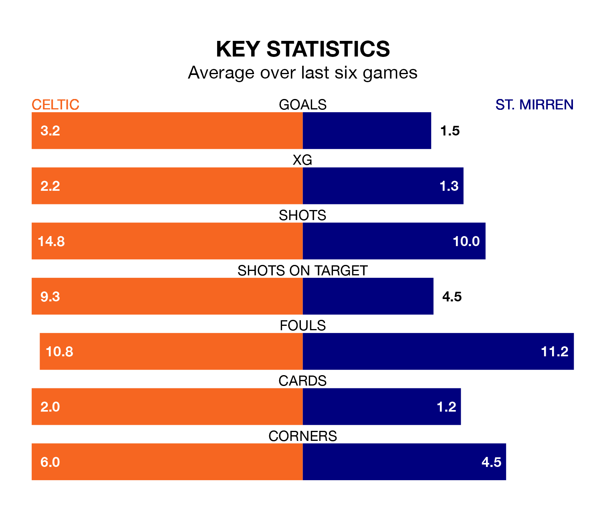

Celtic are heavy favourites to keep all three points at home in Saturday's kick-off against St. Mirren.
The Bhoys, who sit top of the Premiership with 32 games played, are priced at 1.2 to seal victory at Celtic Park.
Sitting four places and 32 points behind them in the table, St. Mirren are 9.5 to win with *Betting Company*, while the draw is at 5.8.
With 77 goals in 32 games so far this season, Celtic are the league's highest scorers with 2.4 goals per game. And they are conceding fewer than average, letting in 26 goals at a rate of 0.8 per game.
St. Mirren, meanwhile, are below average scorers, with 1.2 goals per game, compared to a league average of 1.3. They have also conceded 1.2 goals per game.
In the last 10 years, Celtic and St. Mirren have played each other on 23 occasions. Celtic won 18 of them, St. Mirren two, and they drew three times.
On average, the Bhoys scored 2.7 goals and the Buddies 0.6 in those matches.
Their last meeting was on February 11, when Celtic won 2-0 away.
In Joe Hart, the Bhoys can rely on one of the league's safest pair of hands. He has kept 12 clean sheets in his 31 appearances this season, and only two other 'keepers – Rangers's Jack Butland and Hearts's Zander Clark – have been able to prevent the opposition scoring on more occasions in the Premiership.
In the Buddies's net, Zachary Hemming has 10 clean sheets in 32 games. He has conceded a goal every 78 minutes, 70% more often than the 130 minutes between goals for Hart.
The hosts are in good form in the Premiership, with four wins and a draw from their last six games.
With two wins and two draws over that period, the away side's form is worse – they have taken eight points from 18, compared to Celtic's 13.
Celtic's last match was on Sunday, a 3-3 draw against Rangers, with Adam Uche Idah, Daizen Maeda and Matthew O'Riley getting the goals for the Bhoys.
St. Mirren lost 2-1 against Hearts last time out, on April 6, with Toyosi Olusanya on the scoresheet.
Updated: 14:47 (UTC), 09/04/24